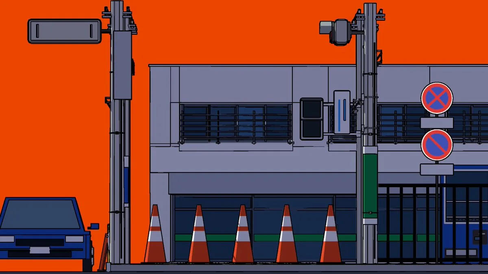

一块被橙色天空铺满的路口，灰楼、路锥和电线杆几乎像一张立面图。作者说，他做的是一个「纵深和前后关系会相互对调」的交叉路口，并把自己的实践称为让空间感觉发生动摇的错视风格作品。

原帖全文
以下为作者日文原帖的中文译文。原帖不是 X 长文，正文只有两句，没有外链项目或仓库。
我做了一个纵深和前后关系会相互对调的交叉路口。
我在制作让空间感觉发生动摇的错视风格作品。
作者：Yuma Garments（@garments__）；发布：2026-11-05 20:04（新加坡时间，UTC+8）。原帖附视频，点击观看。
日文原文
奥行きや前後関係が入れ替わる交差点を作りました
空間の感覚が揺らぐ錯視風作品を制作しています
作者回复
在可检索的作者本人回复里，只有一条，写于发布约两天后：
能被这么多人看到，很高兴！谢谢你们〜！
明年 1 月在东京举办的个展，我也会加紧准备！
日文原文：「たくさんの方に見ていただけて嬉しいです！ありがとうございます〜！／来年1月に東京で開催する個展の準備も頑張ります！」回复原帖。这条回复只确认了「明年 1 月、东京、个展」，没有补充技法、工具或片名。
封面帧里能看见什么
封面是一张作者自己发布的静帧，不是实拍人物照片。画面是偏平面、带清晰黑线的运动图形街景：大面积橙色天空，灰色两层建筑，门前一排五只橙白路锥，左侧一辆正面朝向观众的蓝色轿车，右侧电线杆上叠着禁止停车与禁止泊车标志，再往右是深色栅门。构图几乎像立面图，纵深被压得很薄——这与作者所说的「前后关系对调」可以对照着看，但不能把一张静帧写成已经演示了完整错视过程。
作者没有说明制作工具、软件、是二维还是三维、是否用代码生成，也没有公开源码或制作笔记。因此，本页只转述他的文字，不补写具体算法或镜头机制。
个展信息要分开看
作者 X 简介在核对此页时写着：映像作家、运动图形设计，兴趣是「错视与 morphing」，并自报「2027 年 1 月 15 日，个展＠新宿眼科画廊」。这是作者简介中的自报，不是原帖正文，也尚未对照画廊官方日程核实。⚠️ 回复里只说到「明年 1 月在东京举办个展」，日期与场馆以简介为准，可能会变。
和 Eian 那条「平面翻出纵深」的关系
三天后，Eian（@EianLu）发过一条平面图慢慢翻出纵深的复刻，并在评论里说「最早是一个日本兄弟搞出来的」，但没有给出姓名或原作链接。本帖发布时间更早，作者也是日本运动图形创作者，题材同样围绕空间错觉。⚠️ 这只是时间上的邻近，不能据此写成 Eian 的参考来源就是本片，也不能把两件作品当成同一种技法。Eian 后来说明的是相机不动、在屏幕上滑动两套坐标；本帖没有给出实现说明。关联阅读：从平面图翻出纵深。
传播数据（快照）
2026-11-10 经 X 接口读取时，原帖约 52.6 万次浏览、1.8 万赞、1,513 次转发、87 条引用、98 条回复、5,362 次收藏；视频播放量约 21.9 万。这些数字会变，只作当时记录，不是效果评测。
核实边界与署名
- 这是作者本人日文短帖的全文中译，附原文与作者回复；作品本身没有看到开放许可证，不当作开源项目。
- ⚠️ 未下载或观看 7 秒附件视频，未对运动过程、纵深对调如何发生、空间连续性做视觉评测；封面帧只代表其中一帧。
- ⚠️ 工具链、制作方法、是否代码生成、是否另有标题或系列名称，均未公开。
- ⚠️ 个展的精确日期与场馆来自作者简介自报，未核对画廊日程。
- ⚠️ 与 Eian 复刻帖的参考关系未得到任何一方确认。